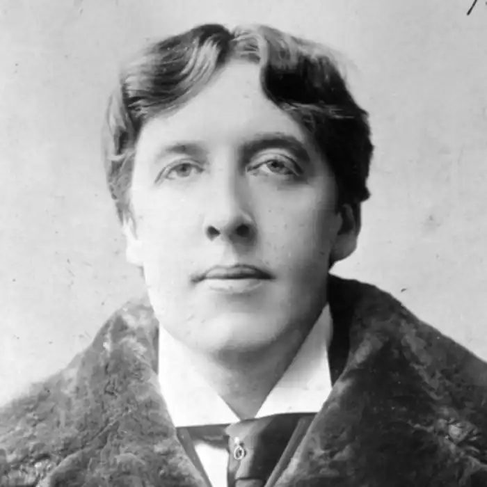
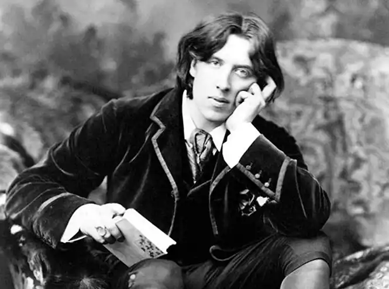

ОСКАР ВАЙЛЬД
(1854-1900)
Оскар Вайльд — поет, драматург і прозаїк, який найповніше втілив у своїй творчості художні принципи англійського естетизму. Народився О. Вайльд у Дубліні в 1854 році. Культ краси, що панував у батьківському домі, багато в чому визначив його особисті погляди на природу мистецтва. О. Вайльд здобув класичну гуманітарну освіту — він навчався у Трініті-коледжі (Дублін) і в Коледжі св. Магдалини (Оксфорд). Після закінчення університету майбутній письменник оселився в Лондоні. На формування естетичних поглядів О. Вайльда значною мірою вплинули його університетські викладачі — визначні постаті в англійській культурі: Джон Рескін, чудовий лектор, який викладав курс історії мистецтва, і Волтер Пейтер, автор багатьох досліджень з античного мистецтва й філософії. Особливий вплив на сучасників мали його роботи про мистецтво Відродження, які О. Вайльд назвав "святим письмом краси". Підсумком досліджень Пейтера стало положення про те, що мистецтво надихається самим мистецтвом і що існує воно лише для себе, йому не потрібні інші обґрунтування. Це визначило розвиток цілого напряму в мистецтві кінця XIX століття — так званого "прерафа-елітизму". Прерафаеліти виявляли себе переважно в живописі та декоративному мистецтві, спираючись у своїй творчості на концепцію, за якою сучасне життя є недосконалим і далеким від ідеалу, а вищі життєві цінності людства залишилися далеко позаду — в середньовіччі. Витоки свого мистецтва прерафаеліти вбачали в живописі раннього Відродження, у традиціях готики. Творам прерафаелітів була притаманна яскравість барв, виписування найдрібніших деталей, строгість стилю, містичні переживання. За сюжети картин правили епізоди з Біблії, із грецької міфології чи історії. Утім, віддаючи належне творчим пошукам представників цього напряму, молодий О. Вайльд пішов власним шляхом. Він приєднався до щойно утвореного естетського руху і став якщо не його головою, то найпалкішим проповідником ідей естетизму. Англійський естетизм 80-90-х років XIX століття багато в чому живився ідеями, що виникали у творчості англійських романтиків і прерафаелітів. Разом із тим, естетський рух, до якого долучився О. Вайльд, розвивався у складний взаємодії з найновішими течіями в європейському мистецтві — символізмом, імпресіонізмом і неоромантизмом. Основна вимога, яку О. Вайльд та його послідовники висували до мистецтва,— не копіювати природу, а відтворювати її за законами краси, недоступної для повсякденного життя. Не мистецтво відображає дійсність, а життя наслідує мистецтву,— вважав письменник. Мистецтво покликане створити новий світ, який є маренням, казкою, неправдою — і при цьому воно нічого не виражає, крім самого себе. Неправда, за О. Вайльдом,— форма вияву краси, а тому вона важливіша за голий практицизм повсякденності. На початку 80-х років він видав свою першу книгу віршів (1881). У тому ж році письменник, вже широко відомий незвичністю своїх суджень та неординарною поведінкою, вирушив на "завоювання Америки" — за океаном він читав "естетські" лекції, проповідував ідеї "нового відродження в англійському мистецтві". Після поїздки до Америки Вайльд деякий час жив у Парижі, а потім повернувся до Лондона. З 1882 до 1888 року він займався переважно журналістською діяльністю, писав літературні огляди й рецензії. У 1888 році побачила світ збірка "Щасливий принц" та інші казки, а в 1891 році О. Вайльд видав оповідання, створені у другій половині 80-х років, об'єднавши їх у збірці "Злочин лорда Артура Севіля та інші оповідання". Цього ж року з'явився роман "Портрет Доріана Грея", книга критичних нарисів "Задуми", збірка чарівних казок "Гранатовий будиночок". У 1894 році вийшла друком книга віршів "Сфінкс". Потім О. Вайльд звертається до драматургії і створює цілу низку п'єс — від стилізованої, написаної французькою "Соломеї" (1891) до побутових комедій "Віяло леді Віндермір(1892), "Жінка, не варта уваги" (1893), "Ідеальний чоловік" (1894) і "Як важливо бути серйозним" (1895). На п'єси Вайльда із захватом відгукується Б. Шоу, вони стають модними, а сам автор здобуває не лише літературний успіх, але й репутацію неперевершеного співбесідника, майстра парадоксів. Помер письменник у 1900 році, остаточно забутий читачами й критикою. Казки О. Вайльда дивним чином являють собою і найбільш органічне втілення естетичних ідей письменника, і найбільш категоричне їх заперечення. У сюжетах та стилістиці казок Вайдьда відбилися різноманітні літературні та мистецькі впливи — Ш. Бодлера, Т. Готьє, Г. Флобера, Г. X. Андерсена, По, живописців Ф. Гойї та Веласкеса. У багатьох казках Вайльда ("Молодий король", "Рибалка та його душа", "Велетень-егоїст", "Зоряний хлопчик") відчувається стилістика біблійної притчі, а образна структура "Солов'я та троянди", "Чудової ракети" та деяких інших творів подібна до образної структури байки. Утім, казкам Вайльда властива неповторна індивідуальність, особливий "аромат". Важливою рисою вайльдівського естетизму від початку був сильний потяг до декоративного мистецтва. Про це свідчать його лекції "Про облаштування житла", газетні дописи про естетику одягу і т. ін. Твори декоративного мистецтва — предмет детальних описів у художніх творах Вайльда. Але значно важливіше те, що Вайльд розробляв особливий "декоративний" стиль оповіді, який рівною мірою складається з предметів зображення і способів опису. У казках автор детально описує інтер'єри кімнат і палаців, одяг і зовнішність героїв, коштовності й прикраси, дерева та квіти. І все, що він змальовує, як правило, є надзвичайно мальовничим, витонченим, вишуканим. У системі епітетів, порівнянь, метафор, які використовує Вайльд, панують мінерали та квіти. Його іноді навіть називали "мінералогом і ботаніком" у літературі. Але Вайльд швидше був "ювеліром та квітникарем". Мінерали цікавили його лише Після того, як ювеліри перетворили їх на коштовне каміння, а квіти —. лише тоді, коли руки садівників виростили їх на садовій клумбі. "Мистецтво вище за природу і не може її наслідувати",— стверджує письменник. Навпаки, природа повинна прагнути до наслідування мистецтва — і тому кров має бути схожа на рубін, синє небо мати колір сапфіра, зелена трава — викликати в пам'яті смарагд. Те ж саме стосується людей: у Студента ("Соловей і троянда") волосся, як темний гіацинт, губи, як троянди, а колір обличчя подібний до слонової кістки; у Принца ("Чудова ракета") очі схожі на фіалки, а волосся ніби з чистого золота; у Інфанти ("День народження Інфанти") "волосся було кольору тьмяного золота". Над усіма героями вивищується Щасливий принц, вкритий золотом з ніг до голови, із сапфірами замість очей і рубіном у руків'ї шпаги. Отже, нібито існує певна гармонія між естетичною теорією та художньою практикою письменника. Але в проблематиці казок судження про незалежність мистецтва від життя втрачають силу. У казках Вайльда немає глибокого художнього дослідження соціальних проблем його часу. Утім, життя присутнє в оповіді, незважаючи на теорії, контрасти між бідністю й багатством набувають тут зовсім не естетичного значення. Щоб показати їх, Вайльд вивищує над містом статую Щасливого принца, напускає сон на Молодого короля, примушує маленького Ганса товаришувати з Мельником. Там, де Вайльд розповідає про страждання бідняків, змінюється навіть стиль оповіді. Зникають барвисті порівняння, тьмяніють коштовне каміння і благородні метали. Яскраве кольорове зображення стає чорно-білим. У казці "Щасливий принц" живий принц не вміє плакати. Його Палац безтурботності міститься за високим муром, який відділяє прекрасний сад від міста. І лише після смерті принц пізнає жаль і смуток людей і вчиться співчувати їм — сльози котяться із сапфірових очей його статуї, яка стоїть на високій колоні над містом. Ластівка знімає з неї шматочки позолоти й відносить бідним, але згодом статую прибирають з міської площі: "У ній вже немає краси, а відтак, немає й користі",— говорить в Університеті професор Естетики. Автор прагнув викрити утилітарний, надто практичний підхід до краси — і парадоксально суперечив сам собі: краса душі й серця принца реалізувалися саме в його бажанні бути корисним людям. "Оскар Вайльд повстає проти самого себе, відкидає свій же ідеал бездумного, бездушного мистецтва, відмовляється від своєї гурманської естетики й вимагає мистецтва щиросердного, народженого любов'ю і подвигом",— зазначав К. Чуковський. Роздумами про співвідношення добра, користі й краси проникнуті майже всі твори Вайльда, втім, фінали казок зазвичай песимістичні: Зло непереможне, торжество Добра не відбувається. Попри це, разом із саркастичним висміюванням вад несправедливого світу, казки Вайльда містять пристрасну проповідь добра, співчуття і краси. "Портрет Доріана Грея" (1891) Роман "Портрет Доріана Грея" — один із найцікавіших і найзагадковіших творів Вайльда. Молодий Доріан Грей стає моделлю для найкращого портрета художника Безіла Холлуорда, а потім, під впливом проповідника гедонізму лорда Генрі Воттона, перетворюється на невиправного себелюбця і шукача задоволень. Поступово людина та портрет ніби обмінюються ролями: Доріан Грей протягом вісімнадцяти років залишається зовні незмінним, а замість нього старіє картина, на якій час, пристрасті й вади моделі залишають свої сліди. Мотив "двійництва", використаний у "Доріані Греї", в романтичній літературі був найгострішою формою вираження "подвійності світу". На межі століть цей мотив виникає як підсумок роздумів про складність, а часом і. "подвійність" людської особистості. У "Портреті Доріана Грея" Вайльд утілив свою концепцію людини, в душі якої — і пекло, і рай. У "Доріані Греї" двійником головного героя стає його портрет. Сам Доріан називає портрет "своїм щоденником". Фабульні межі роману обумовлені періодом цього подвійного життя людини та її зображення на полотні: розповідь про першу зустріч Доріана й лорда Генрі у студії Безіла Холлуорда в день завершення роботи над портретом — своєрідний пролог до дії; епізод, у якому троє слуг Грея, які увійшли до кімнати, побачили труп потворного старого біля портрета прекрасного юнака,— лаконічний епілог. Утім, у романі Вайльда випробуванню піддається навіть не сам герой як особистість чи психологічний тип, а його світогляд, сповідувана ним ідеологічна програма— "новий гедонізм" — філософський принцип, згідно з яким добро визначається як те, що дає насолоду й звільнення від страждання, а зло як те, що викликає страждання. Лорд Генрі Воттон залишається в романі лише ідеологом, а діючим протагоністом виявляється його учень, який живе за програмою, складеною учителем.